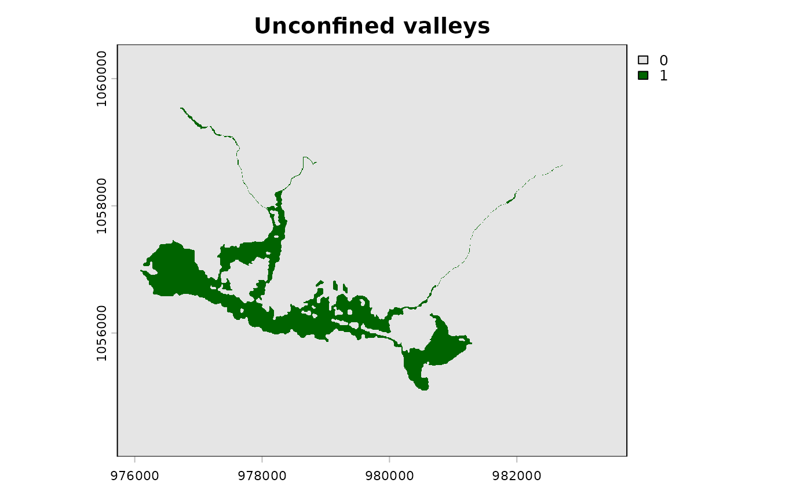

Delineate unconfined valleys using the Valley Confinement Algorithm
Source:R/fl_valley_confine.R
fl_valley_confine.RdOrchestrates the full VCA pipeline: slope thresholding, cost-distance analysis, flood surface modelling, and morphological cleanup to identify unconfined valley bottoms.
Usage
fl_valley_confine(
dem,
streams,
field = "channel_width",
slope = NULL,
slope_threshold = 9,
max_width = 2000,
cost_threshold = 2500,
flood_factor = 6,
precip = 1,
size_threshold = 5000,
hole_threshold = 2500
)Arguments
- dem
A
SpatRasterof elevation.- streams
An
sflinestring object or aSpatRasterof rasterized streams. Ifsf, it is rasterized usingfield.- field
Character. Column name for
fl_stream_rasterize()whenstreamsissf. Default"channel_width".- slope
A
SpatRasterof percent slope. IfNULL, derived fromdem.- slope_threshold
Numeric. Maximum percent slope for valley floor. Default
9.- max_width
Numeric. Maximum valley width in map units (metres). Default
2000.- cost_threshold
Numeric. Maximum accumulated cost distance. Default
2500.- flood_factor
Numeric. Multiplier on bankfull depth. Default
6.- precip
A
SpatRasteror numeric scalar of precipitation. Default1.- size_threshold
Numeric. Minimum valley patch area (m²). Default
5000.- hole_threshold
Numeric. Maximum hole area to fill (m²). Default
2500.
Value
A SpatRaster with binary values: 1 = unconfined valley, 0 =
confined / hillslope, NA = outside analysis extent.
Details
The algorithm combines four criteria via intersection (AND):
Slope mask — cells with slope <=
slope_thresholdDistance mask — cells within
max_width / 2of a streamCost distance mask — cells with accumulated cost <
cost_thresholdFlood mask — cells identified as flooded by bankfull regression
The combined mask then undergoes morphological cleanup:
Closing filter (3x3) to bridge small gaps
Fill small holes (<
hole_threshold)Remove small patches (<
size_threshold)Majority filter (3x3) to smooth edges
Adapted from the USDA Valley Confinement Algorithm Toolbox (BlueGeo implementation by Devin Cairns, MIT license) and bcfishpass lateral habitat assembly (Simon Norris, Apache 2.0).
Performance
Several internal operations (focal filters, distance calculations, raster
math) support multi-threading via terra::terraOptions(). Set threads
before calling this function to speed up processing on large rasters:
On an Apple M4 Max (16 cores), 12 threads reduced runtime from ~3.5 minutes to ~1 minute for a 27M-cell raster (~2,700 km² at 10 m).
Examples
dem <- terra::rast(system.file("testdata/dem.tif", package = "flooded"))
streams <- sf::st_read(
system.file("testdata/streams.gpkg", package = "flooded"),
quiet = TRUE
)
precip_r <- fl_stream_rasterize(streams, dem, field = "map_upstream")
valleys <- fl_valley_confine(
dem, streams,
field = "upstream_area_ha",
precip = precip_r
)
terra::plot(valleys, col = c("grey90", "darkgreen"), main = "Unconfined valleys")
